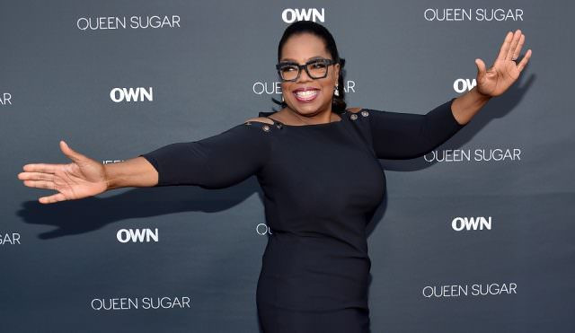
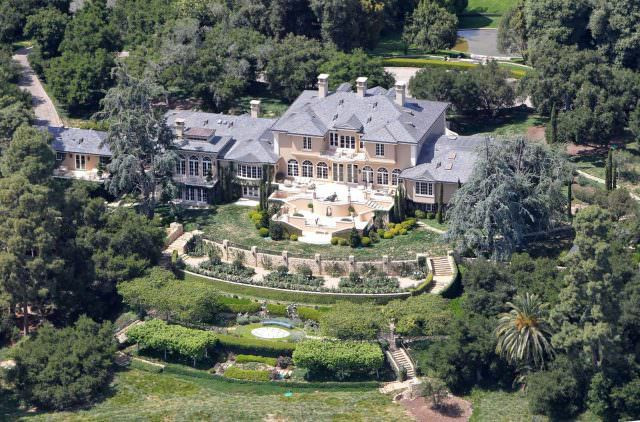
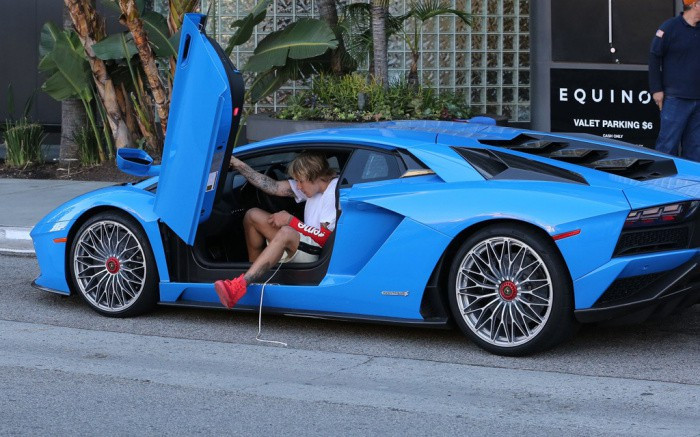
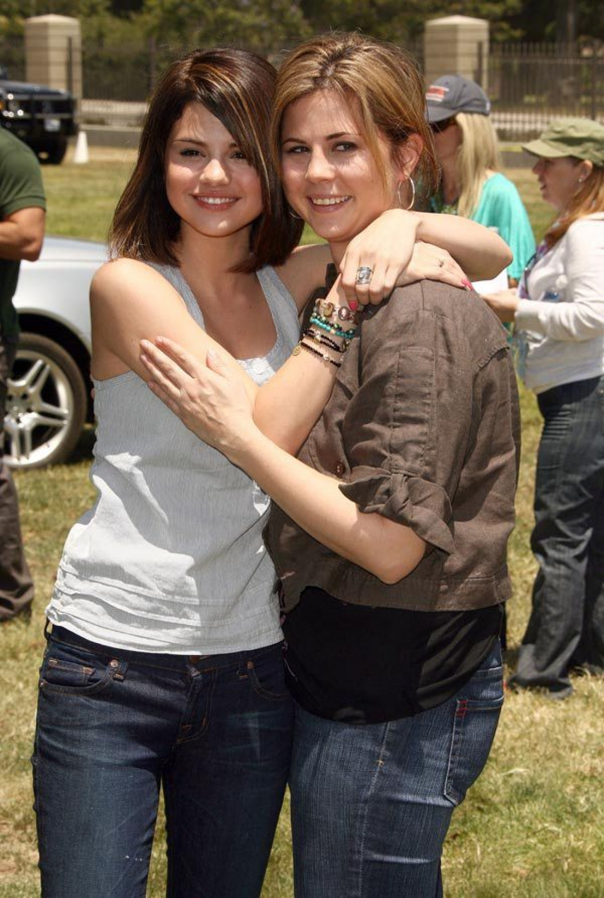
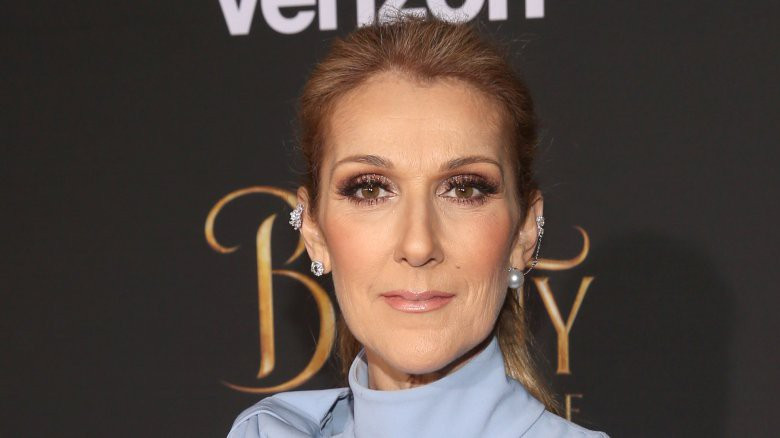
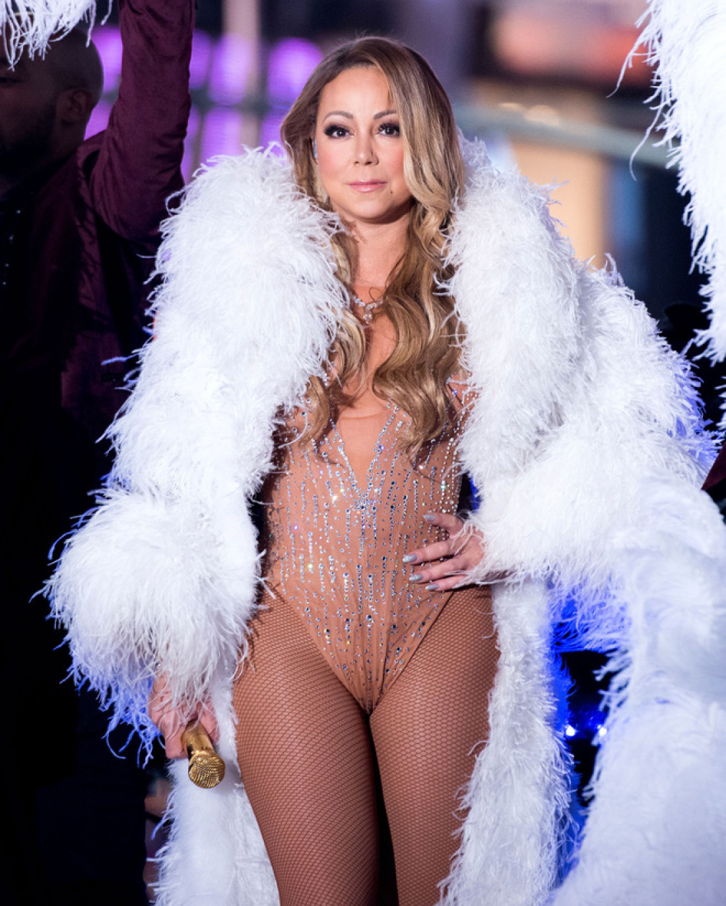
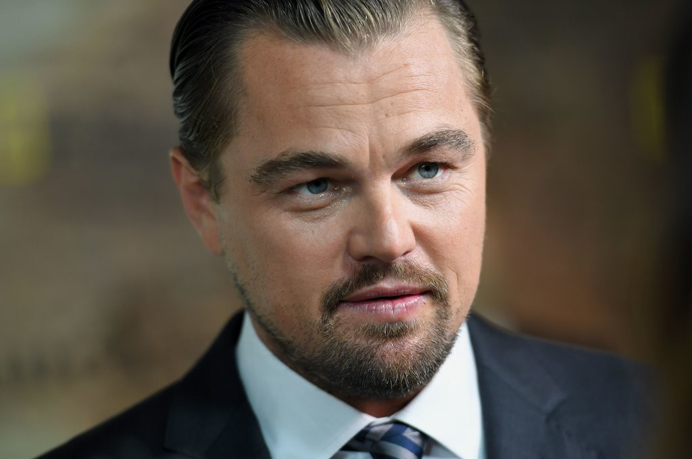
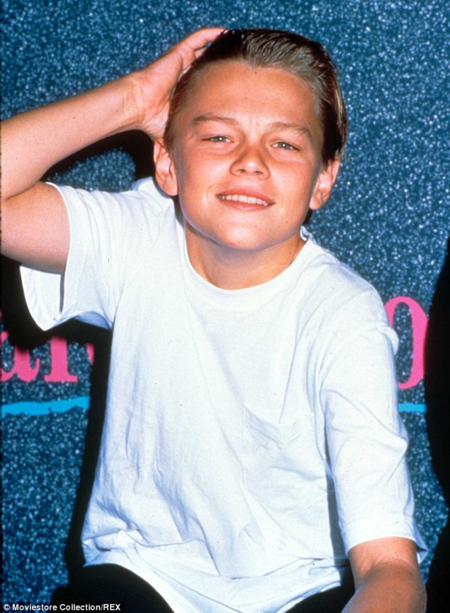
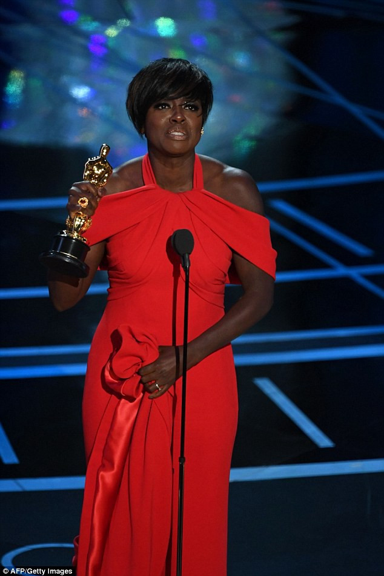

លើ
លោកមានរឿងជាច្រើនលាក់កំបាំងពីក្រោយ រហូតថ្ងៃមួយគ្រប់យ៉ាងត្រូវបានទម្លាយ ទើបបង្កឲ្យមានការភ្ញាក់ផ្អើល ស្ទើរមិនជឿថាជាការពិត។ ដូចតារាប្រុសស្រីទាំង៧ខាងក្រោម សុទ្ធសឹងធ្លាប់រងទុក្ខ និងងើបពីចំណុចសូន្យ ព្រមទាំងឆ្លងកាត់ឧបសគ្គរាប់ភ្លេចរហូតមានមុខមាត់ល្បីល្បាញដូចសព្វថ្ងៃ។
១. Oprah Winfrey
នារីរូបនេះ គឺជាបុគ្គលដែលក្លាយជាគំរូរបស់មនុស្សជាច្រើនដែលបាក់ទឹកចិត្ត។ តាំងពីកុមារ នាងជួបរឿងលំបាកច្រើនណាស់ ទាំងផ្លូវកាយ និងផ្លូវចិត្ត។ ម្ដាយរបស់នាងមិនបានរៀបការទេ តែយូរៗទៅក៏ជ្រុលខ្លួនមានទម្ងន់ Oprah។ ពេលកើតមកហើយ និងឈានដល់អាយុ ៩ឆ្នាំ នាងត្រូវបានសាច់ញាតិម្នាក់ចាប់រំលោភ និងគំរាមមិនឲ្យនាងប្រាប់អ្នកណាទាំងអស់។ កុមារភាពរបស់នាងប្រៀបដូចធ្លាក់ក្នុងរណ្ដៅដ៏ជ្រៅនាពេលនោះ ព្រោះតាំងពីជួបរឿងនោះ នាងបានរត់ចេញពីផ្ទះ ក្លាយជាជនអនាថា។ ប៉ុន្តែដោយសារឆ្អឹងអណ្ដែត នារីដែលធ្លាប់រងទុក្ខពេញទ្រូងនេះ ក៏បានតស៊ូពុះពារក្លាយជាបុគ្គលល្បីរបស់កម្មវិធី "The Oprah Winfrey Show”។
មិនត្រឹមតែប៉ុណ្ណោះនាងក៏បានក្លាយជាមហាសេដ្ឋនីទី១ ប្រចាំពិភពលោកដែរ ជាមួយទឹកប្រាក់ ២,៨ពាន់លានដុល្លារ។ សព្វថ្ងៃ Oparah រស់នៅក្នុងផ្ទះដ៏ស្កឹមស្កៃដូចប្រាសាទ មានតម្លៃច្រើនជាង ១០០លានដុល្លារ ទៅទៀត។
២. Justin Bieber
កាលពីតូច Justin គឹជាក្មេងប្រុសម្នាក់ដែលធ្លាប់រស់នៅក្នុងផ្ទះតូចចង្អៀតសម្បូរកណ្ដុររាប់ក្បាល។ លោកមិនមានបន្ទប់គេងខ្លួនឯងទេ ពោលរាល់យប់ ត្រូវគេងលើសាឡុង។ តារាប្រុសរូបនេះ តែងរម្លឹកជារឿយៗថា ជីវិតរបស់លោកកាលពីតូច គឺជាក្មេងអត់ឃ្លានម្នាក់។
វាជារឿងអតីតកាលដែលជំរុញចិត្ត Justin ឲ្យស៊ូទ្រាំរហូតបានក្លាយជាតារាចម្រៀងល្បីលំដាប់ថ្នាក់ពិភពលោកដូចបច្ចុប្បន្ន។ មួយវិញទៀត លោកក៏ជាតារាប្រុសដែលមានលុយចាយហូហៀរ ឡានទំនើបៗ និងវីឡាដ៏ប្រណីតផង។
៣. Selena Gomez
នៅពេល Selena កើតមក ឪពុកម្ដាយរបស់នាងទើបនៅជាសិស្សសាលានៅឡើយ។ រហូតនាងមានអាយុ ៥ឆ្នាំ ប៉ាម៉ាក់របស់នាងក៏បានលែងលះគ្នា ដូចនេះនាងត្រូវនៅជាមួយម្ដាយ និងជីតា។ គ្រួសារនាងមានវិបត្តិសេដ្ឋកិច្ចក្នុងផ្ទះធ្ងន់ធ្ងរណាស់នាពេលនោះ។ Selena ក៏ធ្លាប់បានទម្លាយដែរថា គ្រួសារនាង ក៏ខ្លាំងណាស់កាលនោះ ហើយវាជាអតីតកាលជូរចត់បំផុតសម្រាប់នាង។
៤. Celine Dion
ម្ចាស់បទ "My Heart Will Go On” រូបនេះមានប្រភពចេញពីគ្រួសារខ្សត់ខ្សោយ ដែលមានបងប្អូនដល់ទៅ១៤នាក់។ ដោយសារកូនច្រើនបែបនេះហើយទើប ឪពុកម្ដាយរបស់ Celine ត្រូវខំរកលុយដើម្បីចិញ្ចឹមកូនទាំងលំបាក។ ប៉ុន្តែសម្ដីមួយម៉ាត់បង្កប់អត្ថន័យជ្រាលជ្រៅចេញពីមាត់ Celine គឺ៖ "បើទោះជាគ្រួសារខ្ញុំមិនក្រយ៉ាងណាក៏មិនសំខាន់ អ្វីដែលពិសេសគឺ គ្រប់គ្នាក្នុងគ្រួសារស្រឡាញ់គ្នា ចេះជួយគ្នាបំផុត”។ សម្រាប់បច្ចុប្បន្ន Celine Dion លែងមានបញ្ហាខ្វះលុយកាក់ទៀតហើយ ព្រោះដោយសារការខិតខំជម្នះរាល់ឧបសគ្គរបស់នាង បានធ្វើឲ្យនាងក្លាយជាតារាល្បី និងមានទ្រព្យសម្បត្តិរាប់លានដុល្លារក្នុងដៃ។
៥. Mariah Carey
នាងបានធំដឹងក្ដីក្នុងតំបន់ស្នាក់នៅដ៏ក្រីក្របំផុតក្នុង Long Island។ ដោយសារនាងមានបងប្អូនភ្លោះ ហើយស្ថិតក្នុងគ្រួសារក្រីក្រ នាងត្រូវចែករបស់គ្នាលេង មិនមែនឯករាជ្យកូនទោលទេ។ ដល់ពេលធំដឹងក្ដី នាងបានប្ដូរមកនៅក្នុងទីក្រុងញូវយ៉ក និងធ្វើការច្រើនកន្លែងណាស់ ដើម្បីទ្រទ្រង់ជីវភាព។ ជាសំណាងល្អ នាងក៏បានស្គាល់ប្រធានក្រុមហ៊ុនថតបទចម្រៀងមួយ ទើបក្រោយមកជីវិតរបស់បានថ្កុំថ្កើង ព្រោះទេពកោសល្យមិនអាចកាត់ថ្លៃបានរបស់នាង។
៦. Leonardo DiCaprio
ជីវិតនៅពីតូចរបស់ លោកជួបរឿងអត់ឃ្លានច្រើនណាស់។ អ្វីដែលកាន់តែគួរឲ្យខ្លាច នៅជុំវិញខ្លួនលោកនាពេលនោះ គឺសុទ្ធតែមនុស្សប្រព្រឹត្តិអំពើអបាយមុខ ជក់ថ្នាំ អំពើបាញ់បោះគួរឲ្យខ្លាច។ ប៉ុន្តែភ័ព្វសំណាងល្អ Leo ក៏បានធំដឹងក្ដីប្រកបដោយគំនិតសុច្ចរិត និងមិនបានធ្លាក់ខ្លួនទៅញៀនថ្នាំដូចអ្នកខ្លះដែរ។ លោកនិយាយថា បើទោះបីខ្លួនក្រ និងរស់នៅក្នុងសង្គមទុច្ចរិតក៏ដោយ ក៏លោកដាច់ខាតមិនជក់ថ្នាំដែរ ព្រោះលោកដឹងពីហានិភ័យក្រោយប្រើប្រាស់វា។
ត្រឡប់មកបច្ចុប្បន្នវិញ Leo គឺជាតារាប្រុសដែលមានទ្រព្យច្រើនមិនធម្មតា ហើយក៏ជាតារាល្បីឈ្មោះទូទាំងសាកលលោកដែរ។
៧. Viola Davis
ម្ចាស់ពានរង្វាន់អូស្ការ Viola Davis ក៏មានជីវិតជូរចត់ដែរកាលពីកុមារភាព។ នាងធ្លាប់ទម្លាយថា ដោយសារមិនមានអាហារគ្រប់គ្រាន់ នាងតែងទៅកាយរកចំណី ឬកាកសំណល់ដែលគេញ៉ាំសល់នៅធុងសំរាមទៀត។ ដោយបុណ្យវាសនាខ្ពស់ នាងក៏មានឱកាសបានចូលរៀននៅសាកលវិទ្យាល័យ Rhode Island Drama ហើយក្រោយមកក៏បានក្លាយជាតារាសម្ដែងដ៏ល្បីដូចបច្ចុប្បន្ន៕
ប្រភព៖ រូបភាពយកពី Facebook